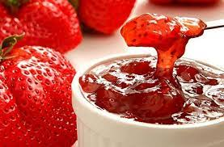

Mermelada Clásica de Frutilla
Descubre la receta tradicional para preparar una deliciosa mermelada casera de frutilla, perfecta para acompañar desayunos y meriendas.
Instructivo Enlace a página WebMermelada Light de Frutilla

Una versión ligera de la mermelada de frutilla, reducida en azúcar y con edulcorante natural, ideal para quienes cuidan su línea sin renunciar al sabor.
Instructivo Enlace a página Web